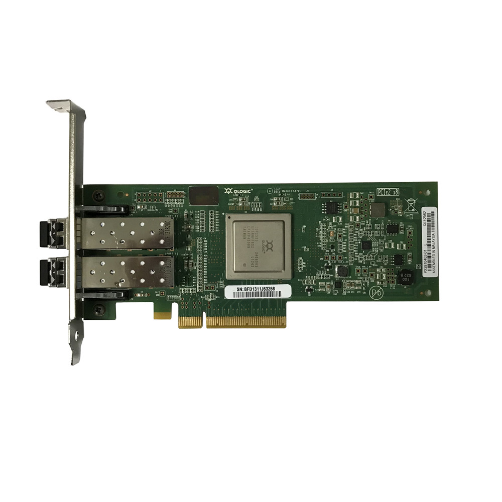

linux WWN 확인
개요
리눅스 OS 환경에서 HBA 카드 정보, HBA 포트 구성과 WWN(World Wide Name) 정보를 수집할 수 있습니다.
TL;DR
정독할 시간이 없는 분들을 위해서 핵심 명령어만 요약했습니다.
확인방법 1
/sys/class 파일로 확인
# HBA 카드 정보 확인
$ lspci -nn | grep -i hba
# HBA 포트 정보 확인
$ ls -l /sys/class/fc_host
# HBA Port 상태확인
$ more /sys/class/fc_host/host?/port_state
# WWN 정보 확인
$ more /sys/class/fc_host/host?/port_name
확인방법 2
systool 명령어로 확인
# systool 명령어 관련 패키지 설치
$ yum install sysfsutils
# HBA 구성정보 확인
$ systool -c fc_host
# HBA Port 상태확인
$ systool -c fc_host -v | grep port_state
# WWN 정보 확인
$ systool -c fc_host -v | grep port_name
환경
- OS : Red Hat Enterprise Linux Server release 5.x (Tikanga)
- Architecture : x86_64
- Shell : bash
- 필요한 패키지 : sysfsutils-2.1.0-1.el5
확인방법
방법1. /sys/class 이용
1-1. HBA 카드 목록 확인
서버에 장착된 HBA 카드 정보를 확인합니다.
$ lspci -nn | grep -i hba
40:00.0 Fibre Channel [0c04]: QLogic Corp. ISP2532-based 8Gb Fibre Channel to PCI Express HBA [1077:2532] (rev 02)
40:00.1 Fibre Channel [0c04]: QLogic Corp. ISP2532-based 8Gb Fibre Channel to PCI Express HBA [1077:2532] (rev 02)
명령어 옵션
-nn : PCI ID를 같이 출력합니다. PCI ID는 제조사 ID(Vendor ID)와 장치 ID(Device ID)를 조합한 값입니다.
Vendor ID : Device ID
1077 : 2532
---- ----
| +---> ISP2532-based 8Gb Fibre Channel to PCI Express HBA
+-----------> QLogic Corp.
40:00 : number는 1개의 HBA 카드를 의미합니다.
40:00.0, 40:00.1 : 1개 HBA 카드의 HBA 포트 2개를 의미합니다.
현재구성은 1개의 HBA 카드(QLogic Corp. ISP2532-based 8Gb)에 2개의 포트로 구성된 상태입니다.

HBA 카드 사진
QLogic Corp. ISP2532-based (출처 : Alibaba.com)
1-2. HBA 포트목록 확인
$ ls -l /sys/class/fc_host
total 0
drwxr-xr-x 3 root root 0 Dec 7 10:42 host7
drwxr-xr-x 3 root root 0 Dec 7 10:45 host8
2개의 HBA 포트(host7, host8)를 사용중입니다.
1-3. HBA 포트상태 확인
$ more /sys/class/fc_host/host?/port_state
::::::::::::::
/sys/class/fc_host/host7/port_state
::::::::::::::
Online
::::::::::::::
/sys/class/fc_host/host8/port_state
::::::::::::::
Online
각 포트의 상태값은 Online 또는 Offline으로 결정됩니다.
현재 서버의 HBA 포트(host7, host8) 2개 전부 사용중인 상태(Online)로 확인됩니다.
1-4. WWN 확인
각 FC 포트마다 부여된 WWN을 확인합니다.
$ more /sys/class/fc_host/host?/port_name
::::::::::::::
/sys/class/fc_host/host7/port_name
::::::::::::::
0x21000024ff4cf9c6
::::::::::::::
/sys/class/fc_host/host8/port_name
::::::::::::::
0x21000024ff4cf9c7
WWN 확인결과는 다음과 같습니다.
- host7 포트의 WWN : 21:00:00:24:ff:4c:f9:c6
- host8 포트의 WWN : 21:00:00:24:ff:4c:f9:c7
WWN
WWN은 World Wide Name의 줄임말입니다.
SAN(Storage Area Network)에서 FC(Fibre Channel) 포트를 인식하기 위한 고유한 ID 주소 값을 의미합니다.
WWN은 FC 포트마다 각각 부여됩니다.
LAN 카드의 고유한 주소인 MAC Address나 휴대전화의 IMEI와 마찬가지로 동일한 WWN은 존재할 수 없습니다.
방법2. systool 이용
systool 명령어는 sysfsutils 패키지에 포함되어 있습니다.
systool 명령어를 사용하기 위해서는 sysfsutils 패키지를 먼저 설치해야합니다.
2-1. sysfsutils 패키지 설치
yum 패키지 관리자를 통해서 최신 버전의 sysfsutils 패키지를 설치합니다.
$ yum install sysfsutils
$ which systool
/usr/bin/systool
systool 명령어를 사용 가능한 상태이며, systool 명령어 파일의 절대경로는 /usr/bin/systool 입니다.
$ rpm -ql sysfsutils
/usr/bin/get_module
/usr/bin/systool
/usr/share/doc/sysfsutils-2.1.0
/usr/share/doc/sysfsutils-2.1.0/AUTHORS
/usr/share/doc/sysfsutils-2.1.0/COPYING
/usr/share/doc/sysfsutils-2.1.0/CREDITS
/usr/share/doc/sysfsutils-2.1.0/ChangeLog
/usr/share/doc/sysfsutils-2.1.0/GPL
/usr/share/doc/sysfsutils-2.1.0/NEWS
/usr/share/doc/sysfsutils-2.1.0/README
/usr/share/doc/sysfsutils-2.1.0/libsysfs.txt
/usr/share/man/man1/systool.1.gz
RPM(Redhat Package Manager) 명령어로 확인해본 결과 systool 명령어는 sysfsutils 패키지에 포함되어 있습니다.
명령어 옵션
-ql : 설치된 패키지를 구성하는 파일들의 절대 경로를 확인합니다.
2-2. HBA 포트 목록확인
현재 사용 가능한 HBA 포트 목록을 확인합니다.
$ systool -c fc_host
Class = "fc_host"
Class Device = "host7"
Device = "host7"
Class Device = "host8"
Device = "host8"
2개의 HBA 포트(host7, host8)가 존재합니다.
2-3. HBA 포트 상태확인
$ systool -c fc_host -v | grep port_state
port_state = "Online"
port_state = "Online"
HBA 포트의 상태값은 Online 또는 Offline으로 결정됩니다.
현재 서버의 2개 HBA 포트(host7, host8)는 모두 Online 상태로 확인됩니다.
2-4. WWN 확인
각 HBA 포트의 고유한 WWN 주소를 확인합니다.
$ systool -c fc_host -v | grep port_name
port_name = "0x21000024ff4cf9c6"
port_name = "0x21000024ff4cf9c7"
WWN 확인결과는 다음과 같습니다.
- host7 포트의 WWN : 21:00:00:24:ff:4c:f9:c6
- host8 포트의 WWN : 21:00:00:24:ff:4c:f9:c7